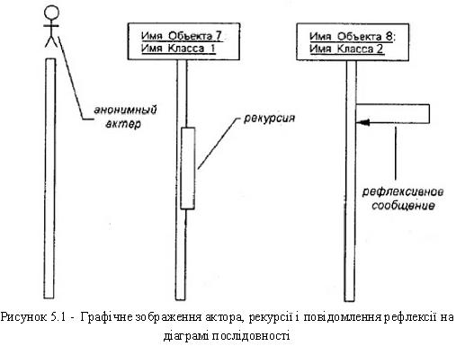

Оєктно-орієнтована модель програмної системи. Розробка діаграми послідовності
Методичні рекомендації до самостійної роботи студентів
Для моделювання взаємодії об'єктів в мові UML використовуються відповідні діаграми взаємодії. Говорячи про ці діаграми, мають на увазі два аспекти взаємодії. По-перше, взаємодії об'єктів можна розглядати в часі, і тоді для представлення тимчасових особливостей передачі і прийому повідомлень між об'єктами використовується діаграма послідовності. Часовий аспект поведінки може мати істотне значення при моделюванні синхронних процесів, що описують взаємодії об'єктів. Саме для цієї мети в мові UML використовуються діаграми послідовності.
По-друге, можна розглядати структурні особливості взаємодії об'єктів. Для представлення структурних особливостей передачі і прийому повідомлень між об'єктами використовується діаграма кооперації.
На діаграмі послідовності зображуються виключно ті об'єкти, які безпосередньо беруть участь у взаємодії і не показуються можливі статичні асоціації з іншими об'єктами. Для діаграми послідовності ключовим моментом є саме динаміка взаємодії об'єктів в часі. Крайнім ліворуч на діаграмі зображається об'єкт, який є ініціатором взаємодії (об'єкт 1 на рис.5.1).
Правіше зображається інший об'єкт, який безпосередньо взаємодіє з першим. Таким чином, усі об'єкти на діаграмі послідовності утворюють деякий порядок, визначуваний мірою активності цих об'єктів при взаємодії один з одним. Кожна взаємодія описується сукупністю повідомлень, якими об'єкти, що беруть участь в нім, обмінюються між собою. У цьому сенсі повідомлення (message) є закінченим фрагментом інформації, який вирушає одним об'єктом іншому. При цьому прийом повідомлення ініціює виконання певних дій, спрямованих на рішення окремої задачі тим об'єктом, якому це повідомлення відправлене.
Таким чином, повідомлення не лише передають деяку інформацію, але і вимагають або припускають від приймаючого об'єкту виконання очікуваних дій. Повідомлення можуть ініціювати виконання операцій об'єктом відповідного класу, а параметри цих операцій передаються разом з повідомленням.

На діаграмі послідовності усі повідомлення впорядковані за часом свого виникнення в модельованій системі.
У мові UML можуть зустрічатися декілька різновидів повідомлень, кожне з яких має своє графічне зображення:
- перший різновид повідомлення є найбільш поширеним і використовується для виклику процедур, виконання операцій або позначення окремих вкладених потоків управління.
- другий різновид повідомлення використовується для позначення простого(не вкладеного) потоку управління.
- третій різновид явно означає асинхронне повідомлення між двома об'єктами в деякій процедурній послідовності. прикладом такого повідомлення може служити переривання операції при виникненні виняткової ситуації.
- нарешті, останній різновид повідомлення використовується для повернення з виклику процедури. прикладом може служити просте повідомлення про завершення деяких обчислень без надання результату розрахунків об'єкту-клієнтові.
Повідомлення можуть мати власне позначення операції, виклик якої вони ініціюють у приймаючого об'єкту. В цьому випадку поряд із стрілкою записується ім'я операції з круглими дужками, в яких можуть вказуватися параметри або аргументи відповідної операції. Якщо параметри відсутні, то дужки все одно мають бути присутніми після імені операції. Прикладами таких операцій можуть служити наступні: "видати клієнтові готівкою суму(п)", "встановити з'єднання між абонентами", "зробити текст, що вводиться, невидимим () ", "подати звуковий сигнал тривоги ()".
Різні елементи логічного представлення, такі як класи, асоціації, стани, повідомлення, не існують матеріально або фізично. Вони лише відбивають наше розуміння структури фізичної системи або аспекти її поведінки. Для створення конкретної фізичної системи необхідно деяким чином реалізувати усі елементи логічного представлення в конкретні матеріальні сутності. Для опису таких реальних сутностей призначений інший аспект модельного представлення, а саме фізичне представлення моделі.
Щоб пояснити відмінність логічного і фізичного представлень, розглянемо у загальних рисах процес розробки деякої програмної системи. Її початковим логічним представленням можуть служити структурні схеми алгоритмів і процедур, описи інтерфейсів і концептуальні схеми баз даних. Проте для реалізації цієї системи необхідно розробити початковий текст програми на деякій мові програмування (C++, Pascal, Basic/VBA, Java). При цьому вже в тексті програми передбачається така організація програмного коду, яка припускає його розбиття на окремі модулі.
Проте, початкові тексти програми ще не є остаточною реалізацією проекту, хоча і служать фрагментом його фізичного представлення. Очевидно, програмна система може вважатися реалізованою у тому випадку, коли вона буде здатна виконувати функції свого цільового призначення. А це можливо, тільки якщо програмний код системи буде реалізований у формі виконуваних модулів, бібліотек класів і процедур, стандартних графічних інтерфейсів, файлах баз даних. Саме ці компоненти є необхідними елементами фізичного представлення системи.
Діаграма компонентів, на відміну від раніше розглянутих діаграм, описує особливості фізичного представлення системи. Діаграма компонентів дозволяє визначити архітектуру системи, що розробляється, встановивши залежності між програмними компонентами, в ролі яких може виступати початковий, бінарний і виконуваний код. Основними графічними елементами діаграми компонентів є компоненти, інтерфейси і залежності між ними (рис.5.2).
Діаграма компонентів розробляється для наступних цілей:
- візуалізація загальної структури початкового коду програмної системи;
- специфікації здійснимого варіанту програмної системи;
- забезпечення багатократного використання окремих фрагментів програмного коду;
- представлення концептуальної і фізичної схем баз даних.
Для представлення фізичних сутностей в мові UML застосовується спеціальний термін - компонент (component). Компонент реалізує деякий набір інтерфейсів і служить для загального позначення елементів фізичного представлення моделі.
Рисунок 5.2 - Графічне зображення компонента в мові UML
Ім'я компонента підкоряється загальним правилам іменування елементів моделі в мові UML і може складатися з будь-якого числа букв, цифр і деяких розділових знаків.
В якості простих імен прийнято використати імена виконуваних файлів(з вказівкою розширення ехе після точки-роздільника), імена динамічних бібліотек (розширення dll), імена Web- сторінок (розширення html), імена текстових файлів (розширення txt або doc) або файлів довідки(hip), імена файлів баз даних(DB) або імена файлів з початковими текстами програм (розширення h, cpp для мови C++, розширення Java для мови Java), скрипти(pi, asp) та ін.
У мові UML виділяють три види компонентів.
- компоненти розгортання, які забезпечують безпосереднє виконання системою своїх функцій. Такими компонентами можуть бути бібліотеки, що динамічно підключаються, з розширенням dll, web- сторінки на мові розмітки гіпертексту з розширенням html і файли довідки з розширенням hlp;
- компоненти-робітники продукти. як правило - це файли з початковими текстами програм, наприклад, з розширеннями h або срр для мови c++;
- компоненти виконання, що представляють здійснимі модулі -файли з розширенням ехе.
Відношення залежності на діаграмі компонентів зображується пунктирною лінією із стрілкою, спрямованою від клієнта(залежного елементу) до джерела(незалежному елементу).
Залежності можуть відбивати зв'язки модулів програми на етапі компіляції і генерації об'єктного коду. У іншому випадку залежність може відбивати наявність в незалежному компоненті описів класів, які використовуються в залежному компоненті для створення відповідних об'єктів.
Так, наприклад, зображений нижче фрагмент діаграми компонентів уявляє інформацію про те, що компонент з ім'ям "main.exe" залежить від інтерфейсу "IDialog", що імпортується, який, у свою чергу, реалізується компонентом з ім'ям image java. Для другого компонента цей же інтерфейс є таким, що експортується.
На діаграмі компонентів можуть бути представлені стосунки залежності між компонентами і реалізованими в них класами. Ця інформація має важливе значення для забезпечення узгодження логічного і фізичного представлень моделі системи. Зрозуміло, зміни в структурі описів класів можуть привести до зміни компонента. Нижче наводиться фрагмент залежності подібного роду, коли деякий компонент залежить від відповідних класів. До початку розробки необхідно прийняти рішення про вибір обчислювальних платформ і операційних систем, на яких передбачається реалізовувати систему, а також про вибір конкретних баз даних і мов програмування.
Після цього можна приступати до загальної структуризації діаграми компонентів. В першу чергу, необхідно вирішити, з яких фізичних частин(файлів) складатиметься програмна система.
Після загальної структуризації фізичного представлення системи необхідно доповнити модель інтерфейсами і схемами бази даних. Включення в модель схеми бази даних припускає специфікацію окремих таблиць і встановлення інформаційних зв'язків між таблицями.
Нарешті, завершальний етап побудови діаграми компонентів пов'язаний зі встановленням і нанесенням на діаграму взаємозв'язків між компонентами, а також стосунків реалізації. Ці стосунки повинні ілюструвати усі найважливіші аспекти фізичної реалізації системи, починаючи з особливостей компіляції початкових текстів програм і закінчуючи виконанням окремих частин програми на етапі її виконання.
Діаграма розгортання призначена для візуалізації елементів і компонентів програми, існуючих лише на етапі її виконання (runtime). При цьому видаються тільки компоненти-екземпляри програми, що є здійснимими файлами або динамічними бібліотеками. Ті компоненти, які не використовуються на етапі виконання, на діаграмі розгортання не показуються. Так, компоненти з початковими текстами програм можуть бути присутніми тільки на діаграмі компонентів. На діаграмі розгортання вони не вказуються.
Діаграма розгортання містить графічні зображення процесорів, пристроїв, процесів і зв'язків між ними. На відміну від діаграм логічного представлення, діаграма розгортання є єдиною для системи в цілому, оскільки повинна цілком відбивати особливості її реалізації.
Цілі, що переслідуються при розробці діаграми розгортання:
- визначити розподіл компонентів системи по її фізичних вузлах;
- показати фізичні зв'язки між усіма вузлами реалізації системи на етапі її виконання;
- виявити вузькі місця системи і реконфігурувати її топологію для досягнення необхідної продуктивності.
Вузол (node) є деяким фізично існуючим елементом системи, що має деякий обчислювальний ресурс. В якості обчислювального ресурсу вузла може розглядатися наявність, щонайменше, деякого об'єму електронної або магнітооптичної пам'яті і/або процесора. У останній версії мови UML поняття вузла розширене і може включати не лише обчислювальні пристрої(процесори), але і інші механічні або електронні пристрої, такі як датчики, принтери, модеми, цифрові камери, сканери і маніпулятори.
Окрім власне зображень вузлів на діаграмі розгортання вказуються стосунки між ними. Стосунками виступають фізичні з'єднання між вузлами і залежності між вузлами і компонентами, зображення яких теж можуть бути присутніми на діаграмах розгортання.
З'єднання є різновидом асоціації і зображуються відрізками ліній без стрілок. Наявність такої лінії вказує на необхідність організації фізичного каналу для обміну інформацією між відповідними вузлами. Характер з'єднання може бути додатково специфікований приміткою, поміченою значенням або обмеженням.
Окрім з'єднань на діаграмі розгортання можуть бути присутніми стосунки залежності між вузлом і розгорнутими на нім компонентами.
Рисунок 5.3 - Фрагмент діаграми компонентів з відношеннямзалежності
Подібний спосіб є альтернативою вкладеному зображенню компонентів усередині символу вузла, що не завжди зручно, оскільки робить цей символ надмірно об'ємним. Тому при великій кількості розгорнутих на вузлі компонентів відповідну інформацію можна представити у формі відношення залежності (рис. 5.5).
Діаграми розгортання можуть мати складнішу структуру, що включає вкладені компоненти, інтерфейси і інші апаратні пристрої. На зображеній нижче діаграмі розгортання представлений фрагмент фізичного представлення системи видаленого обслуговування клієнтів банку. Вузлами цієї системи є видалений термінал(вузол-тип) і сервер банку(вузол-екземпляр).
Розробка діаграми розгортання розпочинається з ідентифікації усіх апаратних, механічних і інших типів пристроїв, які потрібні для виконання системою усіх своїх функцій. В першу чергу специфікуються обчислювальні вузли системи, що мають пам'ять і/або процесор.
Подальша побудова діаграми розгортання пов'язана з розміщенням усіх виконуваних компонентів діаграми по вузлах системи. Якщо окремі виконувані компоненти виявилися не розміщеними, то подібна ситуація має бути виключена введенням в модель додаткових вузлів, що містять процесор і пам'ять.